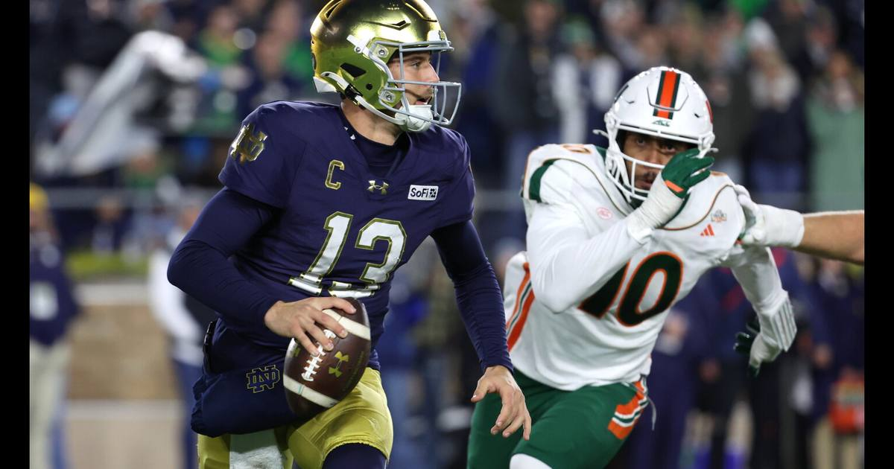

Notre Dame stuns No. 1 Miami 31-24 behind C.J. Carr's 319 yards
C.J. Carr threw for 319 yards and three touchdowns as No. 11 Notre Dame knocked off No. 1 Miami 31-24 in South Bend — the Irish's first win over the nation's top-ranked team in six years, and their first over the Hurricanes in a decade.

Disclosure: this post contains affiliate links. I earn a commission on qualifying purchases.
What happened
No. 11 Notre Dame beat No. 1 Miami 31-24 on Saturday night at Notre Dame Stadium, and it was not a fluke, a gift, or a game the Irish stole. They built a 24-3 lead, survived a furious Miami rally, and made the plays that mattered in the final four minutes to hand the Hurricanes their first loss of the season.
Quarterback C.J. Carr had the best game of his season — 29 of 40 for 319 yards and three touchdowns, no interceptions, spreading the ball to 10 different receivers. It was his first 300-yard game since a 36-7 win over N.C. State on October 11, 2025, and it came against the No. 1 team in the country with Notre Dame's playoff life on the line.
The Irish jumped out fast. Spencer Porath opened the scoring with a 44-yard field goal, and Carr found Jordan Faison for a 27-yard touchdown and Micah Gilbert for an 18-yarder just before halftime to make it 17-3. Gilbert's second touchdown — a 20-yarder to open the third quarter — pushed it to 24-3, and for a while it looked like a rout.
The comeback that almost was
Miami did not go quietly. Darian Mensah, the Heisman Trophy favorite, threw three touchdown passes between the third and fourth quarters — one to tight end Elija Lofton, two to Cooper Barkate — and suddenly the Hurricanes had the ball back down seven with a chance to tie.
The ending was chaos. With 3:36 left, Mensah appeared to hit Lofton for the game-tying touchdown, but officials ruled the tight end did not retain possession after bobbling the ball while landing both feet in the end zone. Notre Dame safety Luke Talich — who had already picked off Mensah for just the second interception of his season — knocked the ball loose on the fourth-down attempt. Miami's last gasp, a hook-and-lateral on the final play, ended in a fumble recovered by Jaiden Ausberry.
Mensah finished 24 of 43 for 276 yards and three touchdowns with the interception, plus 11 carries for 28 yards. He did it without his top target — star wideout Malachi Toney is out for an extended period after ankle surgery — and with Barkate stepping up for 10 catches and 92 yards. Miami's top-ranked offense managed just 74 passing yards and three points in the first half, and the Hurricanes were outgained 251-145 before the break.
Why this one matters
This was a statement game in the most literal sense. On Tuesday, the College Football Playoff committee ranked Notre Dame 11th — seven spots below its No. 4 AP ranking — and made it clear the Irish needed a win like this one to be taken seriously. They got it, and now they head into Week 11 in a near-lock position for the playoff.
The history is just as loud. It is Notre Dame's first victory over Miami in a decade, and the Irish are now 10-1 against the Hurricanes in South Bend and 19-9-1 in the series. It is Marcus Freeman's first victory over the AP's top-ranked team, and the 10th such win in program history (10-17-1 overall). And it came six years to the day after Notre Dame's most recent win over the nation's No. 1 team — the 47-40 double-overtime thriller over Clemson on November 7, 2020.
Gilbert finished with nine catches for 98 yards and two touchdowns. Faison added six catches for 77 yards and a score. Nolan James Jr. ran 16 times for 52 yards and a one-yard touchdown in the fourth quarter, set up by Mensah's interception. Miami head coach Mario Cristobal told reporters afterward he was "beyond upset" about the incomplete ruling on Lofton's would-be tying score — which tells you how close this one was.
What it means
Miami (8-1, 6-0 ACC) still has a clear path to the playoff — it was the No. 1 overall seed in last week's CFP rankings, and a season-ending three-game homestand starts next week against Duke. But the Hurricanes' margin for error is gone, and they will be doing it without Toney.
Notre Dame (8-1) is the story. The Irish went from committee afterthought to playoff near-lock in one night, and they did it the way Freeman's teams are supposed to do it: a quarterback playing the game of his life, a defense that bent and then broke Miami's last two drives, and a stadium that got louder as the night went on. Next up: Boston College, back in South Bend, Saturday at 3:30 p.m. ET.
The box score
C.J. Carr: 29-40, 319 yards, 3 TD, 0 INT
Micah Gilbert: 9 catches, 98 yards, 2 TD
Jordan Faison: 6 catches, 77 yards, 1 TD
Nolan James Jr.: 16 carries, 52 yards, 1 TD
Darian Mensah: 24-43, 276 yards, 3 TD, 1 INT
Cooper Barkate: 10 catches, 92 yards
Final score: Notre Dame 31, Miami 24
Records: Notre Dame 8-1; Miami 8-1 (6-0 ACC)
Sources
• Notre Dame knocks off top-ranked Miami 31-24 (NBC Sports)
• No. 11 Notre Dame Picks Up Playoff-Critical Victory Over No. 1 Miami (247Sports)
• College football Week 10 recaps, highlights, scores, rankings (NCAA.com)
• Notre Dame takes control of CFP fate with win over No. 1 Miami (USA Today)
Gear up: Fanatics